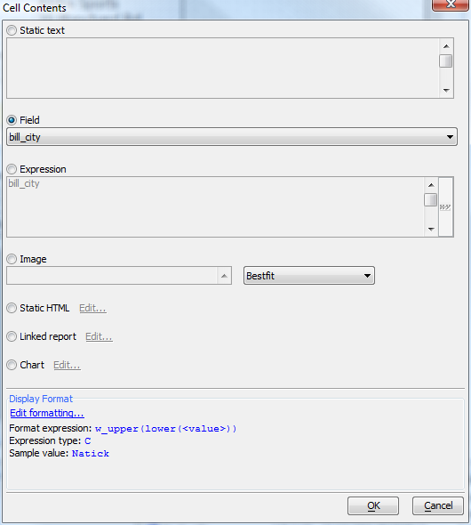

Editing a Layout Table Report
Table of contents
- Editing a Layout Table Report
Editing a Layout Table Report is somewhat different from editing a Free Form Report, although many operations, such as adding a field to the report, are the same for the two types of report. For general information about Free Form reports, see Report Topics.
When editing a Layout Table Report, however, you must think in terms of rows and columns and regions, as though you were working in a spreadsheet or HTML table — which, in fact, may be your ultimate targets for the report.
Adjusting column widths
To adjust column widths, drag the tab icon on the horizontal ruler to the desired location.You may also drag the line between columns, to the same effect.
Selecting one or more columns
To select a single column, click on the horizontal ruler between the tab icons.In a Layout Table curly braces indicate a field value.
To select multiple columns, drag across the columns in the ruler.
Adjusting row heights
You can adjust a row height by dragging the tab icon in the vertical ruler.You may also drag the edge of the row, to the same effect.
Selecting a row
To select a single row, click on the vertical ruler between the tab icons.To select multiple rows, drag across the rows in the ruler. Note that you can't drag beyond the current section.
Selecting a cell
Clicking anywhere within a cell selects the cell. The currently selected cell has a red highlight. The properties pane will update to the current cell properties. You can use the properties pane to edit many of a cell's properties.Editing a cell
You can edit the contents of a cell by double-clicking on the cell, or selecting the cell and pressing the ENTER key.
The editing options are:
- Static text
- Field
- Expression (Xbasic). Note that you can create expressions that concatenate several fields and crlf() calls, and then use remove_blank_lines() to handle unused fields, such as the common case of the optional second address line.
- Image
- Static HTML
- Linked report (must be a Quick Report or a Layout Table Report)
- Chart. See Embedding Charts in Reports V11 and Chart Control V11.
- Display Format. The Display Format dialog is essentially identical to the 'display format' property in a grid, minus the button for special formats, since special formats are unnecessary in the context of the report because the reporting engine handles them automatically.
Using the layout table cell menu
You can drop down the layout table cell menu by clicking on the triangle (down arrowhead) that appears in the top-right corner of a cell when the cell is selected, or by right-clicking in the cell.Selecting a rectangular region of cells
There are two methods for selecting a rectangular region of cells: ruler shift-drag, and cell shift-click (a.k.a. Quick rectangle selection). The ruler shift-drag method depends on the convention that when you hold down the SHIFT key when you drag, the report editor will remember your previous selection on the other axisRuler shift-drag rectangular region selection
Select columns across by dragging the mouse across the horizontal ruler that you want to appear in the rectangular region.While holding down the SHIFT key (so that columns do not get unselected) select rows across by dragging the mouse across the vertical ruler for the section.
Now click on the down arrow in the bottom right of the selected rectangular region, and select 'Merge Selected Cells'.
Now the selected cell rows and columns are merged into one large cell.
Quick rectangular region selection
There is an alternate means of quickly select a rectangular region, which is to click on the cell that you want to be the top-left corner, then SHIFT-click on the cell that you want to be bottom right corner.Click on the top-left corner.
Click on the bottom-right corner while holding down SHIFT.
Using box elements in Layout Table reports
Boxes are to layout table reports what ranges are to spreadsheets. While it is similar to a rectangular region, it is a persistent object in the report.You can add a box via the layout table cell menu, which is accessed by clicking the down arrow on the top right corner of the selected cell. You can also add a box by clicking the box icon on the layout table toolbar.
By default, the Quick Report Genie creates one box for columnar layout table reports. If you create a report and click on the top left cell of the report , you will see a blue 'box-corner' icon.
Click on this icon to show the box selection. From here you can change the size and location of the box. You resize the box by dragging the corners (note the green hash-marks at each corner - these are drag targets).

The box element has its own context menu, which is available when the box is selected - if you click on the arrow in the top-right corner of box, you will see a menu that presents the possible box formats, as well as the option to delete the box.
Using formats allows the stylesheet to handle the appearance of the box on the report. If you want to make inline style modifications, you can do so using the border, fill, and/or font properties or toolbars while the box is selected.
Using the Layout Table toolbar
You will notice on the report toolbar for layout table reports there is a new 'layout table' icon next to the text/border and formatting toolbar buttons.If you click this when the layout table toolbar is hidden, the layout table toolbar will display. The layout table toolbar is displayed by default when you open a layout table for editing.
Row Options
The first section of this toolbar deals with row options. The first icon shows a row being inserted after the current row. The second icon shows the current row being deleted.The first drop-down box descibes the row format. The options are Default, Heading and Total. These are formatting hints to tell the stylesheet what we are storing in the row, so that the correct style can be shown for the row when we print or otherwise render the report.
The second drop-down box is the Page-Break setting for the row. The options are None, Before, After, Before-Sheet, and After-Sheet. The default value is None. If you pick Before or After, when the report is printed it will have a page break either before or after the row, depending on the setting.
Before-Sheet and After-Sheet are the same as Before and After, except when rendering to an Excel spreadsheet. On a spreadsheet, Before-Sheet and After-Sheet create a new sheet instead of a page throw.